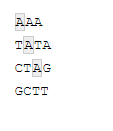
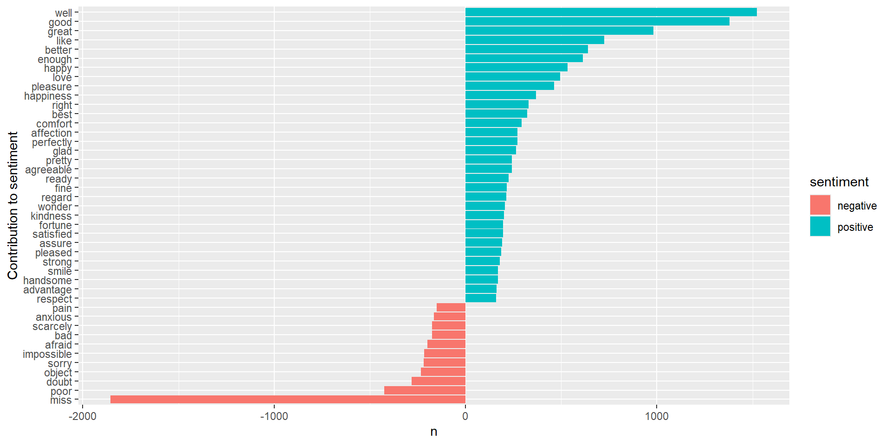
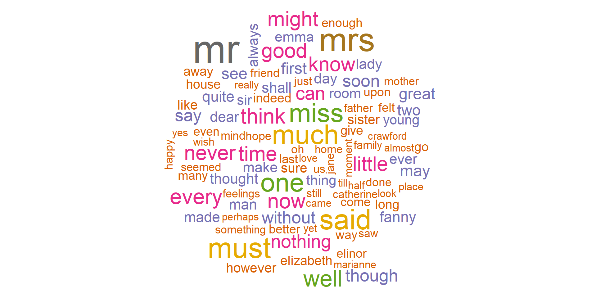
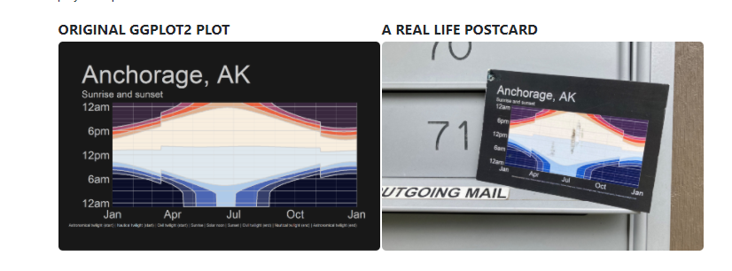

Computer Modeling (OCN 682)
Working with Strings
UH Fall 2026
2026-10-20
Outline
Working with Words
- Using {stringr} to clean up strings (part of the tidyverse)
- Intro to regex (regular expressions)
- Using {tidytext} for text mining/analysis
- Make a wordcloud


Set Up Your Script
New packages to install:
Libraries to load:
Intro to {stringr}
What Is a String?
A string and a character are the same thing. You can tell something is a string by the presence of quotations. For example:
Intro to {stringr}
There are 4 basic families of functions in the {stringr} package:
- Manipulation — functions that let you manipulate individual characters within the strings in character vectors.
- Whitespace tools to add, remove, and manipulate whitespace.
- Locale sensitive operations whose behavior will vary from locale to locale.
- Pattern matching functions — recognize four engines of pattern description. The most common is regular expressions, but there are three other tools.
Manipulation
Paste words together. This can be useful if, say, you have two columns of treatments and you want to combine them into one (e.g., high temp, low temp and high pH, low pH).
Manipulation
Working with vectors:
[1] "My favorite shape is a Square" "My favorite shape is a Circle"
[3] "My favorite shape is a Triangle"Manipulation: Individual Characters
Let’s say you want to know how long a string is:
[1] "Square" "Circle" "Triangle"[1] 6 6 8Manipulation
You can also modify strings:
Whitespace
Say you have a column and you did not copy and paste your treatments like you learned in the first week of class. You now have some words with extra white spaces and R thinks it’s an entirely new word. Here is how to deal with that:
[1] "High" " High" "High " "Low" "Low" Remove white space:
Whitespace
The opposite of str_trim() is str_pad(), to add white space to either side:
[1] "High " " High" "High " "Low " "Low "Locale Sensitive
Warning
These will perform differently in different places in the world / with different languages. The default is English, but you can set the language setting.
Make everything upper case:
Locale Sensitive
Make it title case (cap first letter of each word):
Pattern Matching
{stringr} has functions to view, detect, locate, extract, match, replace, and split strings based on specific patterns.
View a specific pattern in a vector of strings:

Pattern Matching
{stringr} has functions to view, detect, locate, extract, match, replace, and split strings based on specific patterns.
Detect a specific pattern:
regex: Regular Expressions
regex: Regular Expressions
But what if we want to search for something more complicated than that — like finding all the numbers, letters, or special characters?
Warning
Regular expressions are hard and a pain in the butt… but are very helpful to learn.
regex: Regular Expressions
There are several types of regular expressions:
- Metacharacters
- Sequences
- Quantifiers
- Character classes
- POSIX character classes (Portable Operating System Interface)
Metacharacters
The simplest form of regular expressions are those that match a single character. Most characters, including all letters and digits, are regular expressions that match themselves. For a language like R, there are some special characters that have reserved meaning — these are referred to as metacharacters. The metacharacters in Extended Regular Expressions (EREs) are:
. \ | ( ) [ { $ * + ?Metacharacters
Let’s say that you have the following set of strings:
Aside About the Functions
Each function in {stringr} has two forms: a basic form that searches for the first instance of a character, and a *_all form that searches for all instances. For example:
Let’s say we had multiple “.” in our character vector:
[1] "a b.c" "b c.d" "c d.e"str_replace() only replaces the first instance. Let’s try str_replace_all():
Sequences
Sequences, as the name suggests, refer to the sequences of characters which can match. We have shorthand versions (or anchors) for commonly used sequences in R.
Character Class
A character class or character set is a list of characters enclosed by square brackets [ ]. Character sets are used to match only one of the different characters. For example, the regex character class [aA] matches any lowercase letter a or any uppercase letter A.
Quantifiers
| Symbol | Meaning |
|---|---|
^ |
Beginning of String |
$ |
End of String |
\n |
Newline |
+ |
One or More of Previous |
* |
Zero or More of Previous |
? |
Zero or One of Previous |
{5} |
Exactly 5 of Previous |
{2, 5} |
Between 2 and 5 of Previous |
{2, } |
More than 2 of Previous |
Example: Find the Phone Numbers
Make a regex that finds all the strings that contain a phone number. We know there is a specific pattern (3 numbers, 3 numbers, 4 numbers, separated by either a “.” or “-”). Let’s also say we know that the first number cannot be a 1.
Example: Find the Phone Numbers
Think, Pair, Share
Let’s clean it up. Let’s replace all the “.” with “-” and extract only the numbers (leaving the letters behind). Remove any extra white space. You can use a sequence of pipes.
Think, Pair, Share
{tidytext}
tidytext
Package for text mining and making text tidy. This is very helpful for social sciences or anyone that uses survey data. Also really helpful for text mining abstracts to write a review paper on a topic.
Let’s analyze some books by Jane Austen. The function to get all of the text from all of Jane Austen’s books is austen_books().
tidytext
Package for text mining and making text tidy. This is very helpful for social sciences or anyone that uses survey data. Also really helpful for text mining abstracts to write a review paper on a topic.
Let’s analyze some books by Jane Austen. The function to get all of the text from all of Jane Austen’s books is austen_books().
tidytext
Let’s clean it up and add a column for line and chapter:
original_books <- austen_books() |> # get all of Jane Austen's books
group_by(book) |>
mutate(line = row_number(), # find every line
chapter = cumsum(str_detect(text, regex("^chapter [\\divxlc]", # count the chapters (starts with the word chapter followed by a digit or roman numeral)
ignore_case = TRUE)))) |> # ignore lower or uppercase
ungroup() # ungroup it so we have a dataframe again
# don't try to view the entire thing... it's >73000 lines...
head(original_books)# A tibble: 6 × 4
text book line chapter
<chr> <fct> <int> <int>
1 "SENSE AND SENSIBILITY" Sense & Sensibility 1 0
2 "" Sense & Sensibility 2 0
3 "by Jane Austen" Sense & Sensibility 3 0
4 "" Sense & Sensibility 4 0
5 "(1811)" Sense & Sensibility 5 0
6 "" Sense & Sensibility 6 0tidytext
Because we are interested in text mining, we will want to clean this so that there is only one word per row, so it’s tidy. In tidytext, each word is referred to as a token. The function to unnest the data so that it’s only one word per row is unnest_tokens().
# A tibble: 6 × 4
book line chapter word
<fct> <int> <int> <chr>
1 Sense & Sensibility 1 0 sense
2 Sense & Sensibility 1 0 and
3 Sense & Sensibility 1 0 sensibility
4 Sense & Sensibility 3 0 by
5 Sense & Sensibility 3 0 jane
6 Sense & Sensibility 3 0 austen tidytext
OK, so we now have >735,000 rows of words… but some of these words are kind of useless. Words that are common and don’t really have important meaning (e.g. “and”, “by”, “therefore”…) are called stopwords. We can use the function get_stopwords() to essentially remove these words from our dataframe. (This function is essentially just a dataframe of unnecessary words.)
tidytext
Use what we know from joins to remove all the stopwords:
# A tibble: 6 × 4
book line chapter word
<fct> <int> <int> <chr>
1 Sense & Sensibility 1 0 sense
2 Sense & Sensibility 1 0 sensibility
3 Sense & Sensibility 3 0 jane
4 Sense & Sensibility 3 0 austen
5 Sense & Sensibility 5 0 1811
6 Sense & Sensibility 10 1 chapter tidytext
Let’s count the most common words across all her books:
# A tibble: 14,375 × 2
word n
<chr> <int>
1 mr 3015
2 mrs 2446
3 must 2071
4 said 2041
5 much 1935
6 miss 1855
7 one 1831
8 well 1523
9 every 1456
10 think 1440
# ℹ 14,365 more rowsNote
How would we modify this code to count the most popular words in an abstract or paper, for example?
Sentiment Analysis
There are many ways that we can now analyze this tidy dataset of text. One example is we could do a sentiment analysis (how many positive and negative words) using get_sentiments().
Note
There are many different lexicons for sentiment analysis — look at the help files if you want to go deeper into this.
# A tibble: 3 × 3
word sentiment n
<chr> <chr> <int>
1 miss negative 1855
2 well positive 1523
3 good positive 1380Now, think about how we could do this with science? Instead of get_sentiments(), you could use an inner_join() with a vector of keywords that you are searching for.
Let’s Plot It
We can now use ggplot to visualize counts of positive and negative words in the books:
sent_word_counts |>
filter(n > 150) |> # take only if there are over 150 instances of it
mutate(n = ifelse(sentiment == "negative", -n, n)) |> # add a column where if the word is negative make the count negative
mutate(word = reorder(word, n)) |> # sort it so it goes from largest to smallest
ggplot(aes(x = n, y = word, fill = sentiment)) +
geom_col() +
labs(y = "Contribution to sentiment")Let’s Plot It

Make a Wordcloud
Use the {wordcloud} package to make a word cloud:

Today’s Totally Awesome R Package — {ggirl}
{ggirl} (gg in real life)
Have you ever made a plot that you love so much and thought, “I want to send this to someone!” Well, now you can! Turn your ggplots into a postcard.
Note
I wouldn’t be mad if random postcards of ggplots showed up in my mailbox…

No Homework Today!
Work on your Community Data Sprint.
Thanks!
Thanks!
Slides created via Quarto
Many slides modified from the following resources:
CRAN stringr | Mastering software development in R | stringr vignette | modern, consistent string processing | Intro to tidytext
OCN 682 | Week 10 | Working with Strings